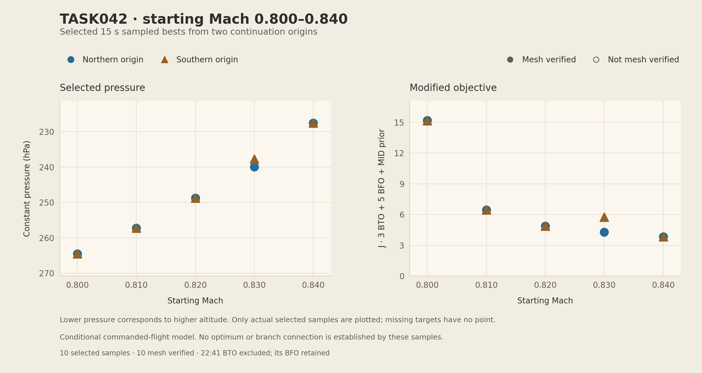

TASK042 · SEPARATE EXPERIMENT · COMPLETED 21 NOVEMBER 2026
A bounded search from two historical starting recipes retained a model-supported history at each of five starting speeds. All ten selections passed the declared step-size comparisons. The results below describe those saved samples under TASK042’s starting-state, fuel and guidance assumptions.
Starting Mach values, from each of two historical origins
Selected model-supported samples, all numerically verified
Step-size comparisons passed: 15 → 7.5 → 3.75 seconds
Flight calculations completed within the frozen allowance
Selected results · 00:11 states · Method and numerical checks · Downloads and provenance
“North” and “South” identify the historical recipe from which each local search began. They are origin labels, not classifications of the resulting location. Starting latitude, bearing and constant pressure were allowed to adjust. The target Mach is the initial speed plateau: every flight keeps TASK042’s 0.01 Mach reduction over 23:30–23:32 UTC.

| Search origin | Starting Mach | Pressure hPa | Modified J | Max |BTO z| | Max |BFO z| | Search termination |
|---|---|---|---|---|---|---|
| North | 0.800 | 264.500 | 15.179740 | 2.6064 | 0.8743 | Cap reached |
| North | 0.810 | 257.277 | 6.463590 | 1.3171 | 0.8647 | Optimizer success |
| North | 0.820 | 248.738 | 4.884322 | 0.9395 | 0.9535 | Cap reached |
| North | 0.830 | 239.920 | 4.272901 | 0.7446 | 1.3141 | Cap reached |
| North | 0.840 | 227.559 | 3.821366 | 0.5714 | 1.4185 | Cap reached |
| South | 0.800 | 264.501 | 15.169851 | 2.6068 | 0.8732 | Cap reached |
| South | 0.810 | 257.279 | 6.463199 | 1.3177 | 0.8638 | Optimizer success |
| South | 0.820 | 248.751 | 4.884449 | 0.9526 | 0.9623 | Optimizer success |
| South | 0.830 | 237.720 | 5.740477 | 1.2977 | 1.4348 | Cap reached |
| South | 0.840 | 227.556 | 3.821919 | 0.5680 | 1.4177 | Cap reached |
Source: all ten selected recipes (CSV). J is the retained observation score plus the original MID prior. The z values are residuals divided by the experiment’s adopted measurement scales; their maxima are descriptive, not additional pass thresholds. The BFO values include 22:41. Scores cannot be compared directly with historical TASK042 scores that also fitted 22:41 BTO.
The two Mach 0.840 starts have the lowest retained J among these targets. This ranks the sampled recipes under this objective. It does not show that Mach 0.84 is generally optimal: the selected pressure and starting parameters also change, and seven searches reached their allocation caps. Even the three optimizer-success returns are not independently certified stationary points.
These are the supported, powered states saved by the selected 15-second calculations. Fuel above the model’s imposed APU reserve is reported separately from total fuel. The last column is the later recorded combustion-thrust-loss time; the positions in the table are 00:11 positions, not fuel-loss or impact positions.
| Search origin | Starting Mach | 00:11 latitude, longitude | Geometric height m | Total fuel kg | Fuel above APU kg | Thrust-loss time UTC |
|---|---|---|---|---|---|---|
| North | 0.800 | -30.410180, 96.832061 | 10,421.15 | 605.414 | 598.611 | 00:17:21.054 |
| North | 0.810 | -30.615921, 96.593496 | 10,604.36 | 526.262 | 519.458 | 00:16:29.029 |
| North | 0.820 | -32.105838, 95.098130 | 10,797.10 | 520.195 | 513.391 | 00:16:29.000 |
| North | 0.830 | -33.797681, 93.153263 | 11,012.24 | 519.259 | 512.455 | 00:16:29.000 |
| North | 0.840 | -35.052484, 91.515083 | 11,348.28 | 652.968 | 646.164 | 00:17:58.999 |
| South | 0.800 | -30.416097, 96.826071 | 10,420.96 | 605.418 | 598.614 | 00:17:21.058 |
| South | 0.810 | -30.621873, 96.587439 | 10,604.14 | 526.202 | 519.398 | 00:16:29.000 |
| South | 0.820 | -32.139122, 95.061485 | 10,796.10 | 520.334 | 513.530 | 00:16:29.000 |
| South | 0.830 | -34.796951, 91.820678 | 11,066.72 | 644.547 | 637.743 | 00:17:54.740 |
| South | 0.840 | -35.044829, 91.525910 | 11,348.39 | 652.976 | 646.172 | 00:17:58.999 |
The two searches remain distinct sets of samples. At Mach 0.840 their selected 00:11 positions are about 1.30 km apart. The paired positions are much farther apart at Mach 0.830. Five Mach cuts and finite local searches do not prove that branches connect or remain separate. No interpolation between these samples, terminal trajectory or search area is established.
Source: saved-record report and compact comparison extract.
| Part of the experiment | Declared scope |
|---|---|
| Starting states | Two historical TASK042 anchors at 19:41:03 UTC. Starting fuel and mass are inherited assumptions, not reconstructed incoming histories. The anchors were replayed before searching. The historical southern anchor begins at Mach 0.843427…; it is distinct from the new 0.840 target. |
| Speed and pressure | Starting Mach 0.800, 0.810, 0.820, 0.830 and 0.840. Constant pressure per flight; latitude, bearing and pressure adjustable within the frozen bounds. Mach decreases by 0.01 over 23:30–23:32. Guidance and performance coefficients are inherited unchanged. |
| Timing measurements (BTO) | 19:41 closes the starting longitude. 20:41, 21:41 and 00:11 enter the new objective. No new 22:41 BTO prediction or use in selection occurred. |
| Frequency measurements (BFO) | All five terms remain fitted, including 22:41 BFO. The objective includes the original MID prior. Historical anchor selection and setup had prior exposure to 22:41; it is not a blind holdout. |
| Physical eligibility in this model | Model support and the inherited engine-fuel-loss window, 00:16:29–00:17:59 UTC. This window selects the flights; it is not an independent timing prediction or a universal fuel requirement. |
| Numerical verification | Each retained 15-second recipe repeated at 7.5 and 3.75 seconds, with its production fitted BFO offset held fixed. Both sides of each comparison must remain eligible, and all four numerical differences must meet their declared thresholds. |
| Interpretation | Best-found samples within a bounded search. No new statistical compatibility cutoff, global minimum, continuous branch, final-transmission state or impact position is certified. |
| Quantity | Largest change across 20 comparisons | Declared criterion |
|---|---|---|
| |Δ observation χ²| | 0.00002056 | < 0.01 |
| 00:11 position shift | 0.101110 m | < 10 m |
| |Δ fuel| | 0.000525344 kg | < 1 kg |
| |Δ engine-loss time| | 0.000387567 s | < 5 s |
These observed differences are numerical refinement checks, not absolute error bounds. The hard fuel window was evaluated independently at every step size and was not widened to accommodate a repeat. The full report retains each comparison and each fuel-window margin.
This experiment used 547 completed flight calculations and 4,406.128 charged seconds within the frozen 600-flight / 7,200-second allowance. Seven of ten local searches stopped at their per-target or restoration cap; zero software failures were recorded. It is separate from the LRC pilot and from the proposed Mach 0.84 climb experiment at FL370–390. Publishing this page runs no flight model.
Experiment TASK042_Mach080_084_20261121_001. Frozen scientific revision 11f3ec951da4ac4d05bccbc5a8cf620063aff97b815ab5703cf2254687efad25. Supplied TASK042 source snapshot 64e090a167dd402043ddff6b8fa6fc16ac919ade. The original report, CSV, audit and figure files are copied byte for byte. The compact JSON is a labelled extraction from the retained comparison record. The full 91 MB run archive is identified here by SHA-256; it is not a download hosted on this page.
Full record ZIP SHA-256: a55a217300bf29f67b3631690cc0cc175a4577da58b59bc2164175d8e4d48c92
Atlas overview · Other flight experiments · Methods summary · Historical scope and preservation